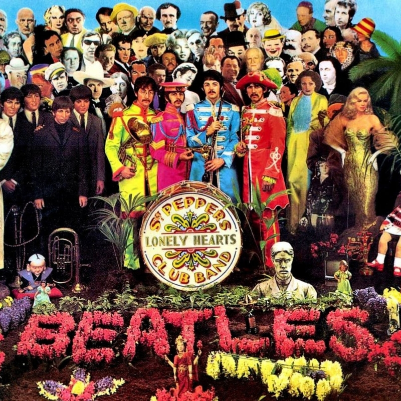

A história dos Beatles
The Beatles é uma famosa banda de rock britânica formada em Liverpool em 1960 e um dos atos mais comercialmente bem-sucedidos e aclamados da história da música mundial. A partir de 1962, o grupo era formado por John Lennon (guitarra rítmica e vocal), Paul McCartney (baixo e vocal), George Harrison (guitarra solo e vocal) e Ringo Starr (bateria e vocal).
Enraizada do skiffle e do rock and roll da década de 1950, a banda veio mais tarde a assumir diversos gêneros que vão do folk rock ao rock psicodélico, muitas vezes incorporando elementos da música clássica e outros em formas inovadoras e criativas. Sua crescente popularidade, que a imprensa britânica chamava de "Beatlemania", fizeram com que eles crescessem em sofisticação. Os Beatles vieram a ser percebidos como encarnação de ideais progressistas e sua influência se estendeu até as revolucões sociais e culturais da década de 1960.
Com a formação inicial de Lennon, McCartney, Harrison, Stuart Sutcliffe (baixo) e Pete Best (bateria), os Beatles construíram sua reputação nos pubs de Liverpool Hamburgo durante um período de três anos a partir de 1960. Sutcliffe deixou o grupo em 61 e Best foi substituído por Starr no ano seguinte. Abastecida de equipamentos profissionais moldados por Brian Epstein, que depois se ofereceu para gerenciar a banda e com seu potencial reforçado pela criatividade do produtor George Martin, os Beatles alcançaram um sucesso imediato no Reino Unido com seu primeiro single "Love Me Do", lançado em 1962. O primeiro LP, "Please Please Me" foi lançado em 1963.
Ganhando popularidade internacional a partir do ano seguinte, excursionaram extensivamente até 1966, quando retiraram-se para trabalhar em estúdio até a dissolução definitiva em 1970. Cada músico então seguiu uma carreira independente. McCartney e Starr continuam ativos. Lennon foi baleado e morto em 1980 e Harrison morreu de câncer em 2001.
Um de seus melhores álmbuns
Durante seus anos de estúdio, os Beatles produziram o que a crítica considera um dos seus melhores materiais, incluindo o álmbum Sgt. Pepper's Lonely Hearts Club Band (1967), amplamente visto como uma obra-prima.
Mais de cinco décadas após sua dissolução, a música do grupo continua a ser muito popular. Os Beatles participaram também dos filmes "A Hard Day's Night", "Help", "Magical Mistery Tour" e "Let It Be", além de gravarem a trilha sonora do desenho animado "Yellow Submarine".
Os Beatles tiveram mais álmbuns em número 1 nas paradas britânicas do que qualquer outro ato musical. De acordo com o RIAA (Recording Industry Association of America), eles venderam mais álbuns nos Estados Unidos do que qualquer outro artista.
Em 2008, a Billboard divulgou uma lista dos top-selling de todos os tempos dos artistas "Hot 100" para celebrar o cinquentenário das paradas de singles dos EUA e a banda permaneceu em primeiro lugar. Eles foram honrados com 7 Grammy Awards e 15 Ivor Novello Awards da BASCA, além de terem vendido mais de 1 bilhão de discos ao redor do mundo. O Fab Four, ademais, foi coletivamente incluído na compilação da revista da Time das 100 pessoas mais importantes e influentes do século 20.